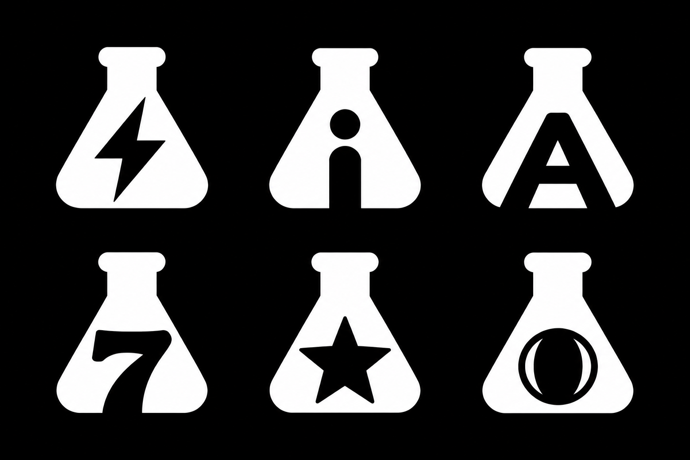
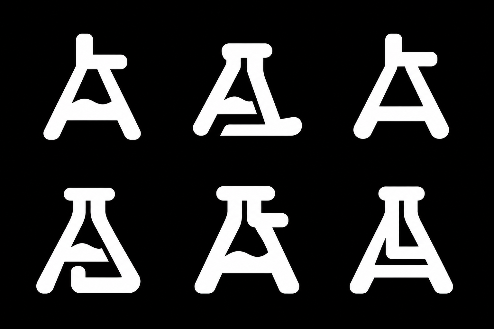
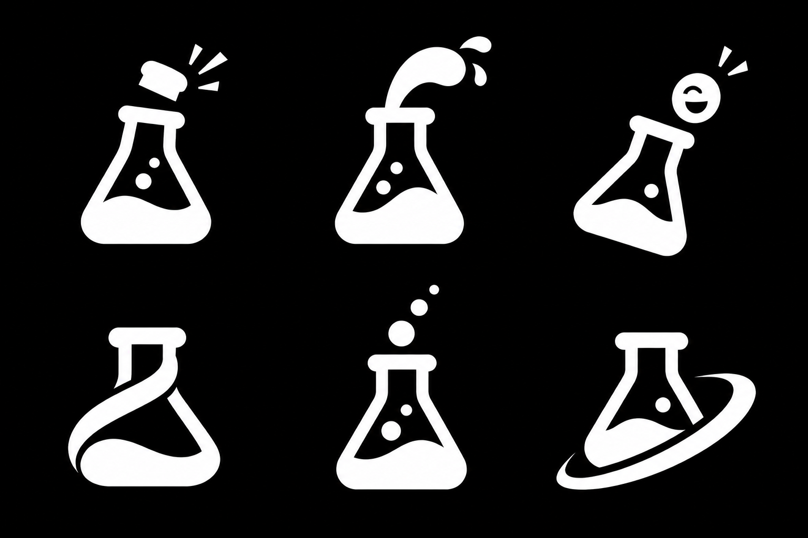
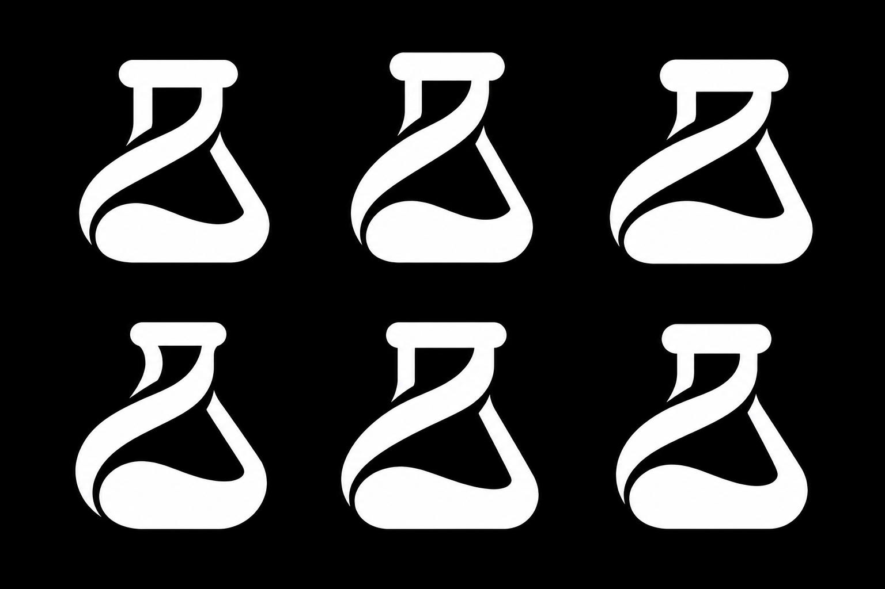
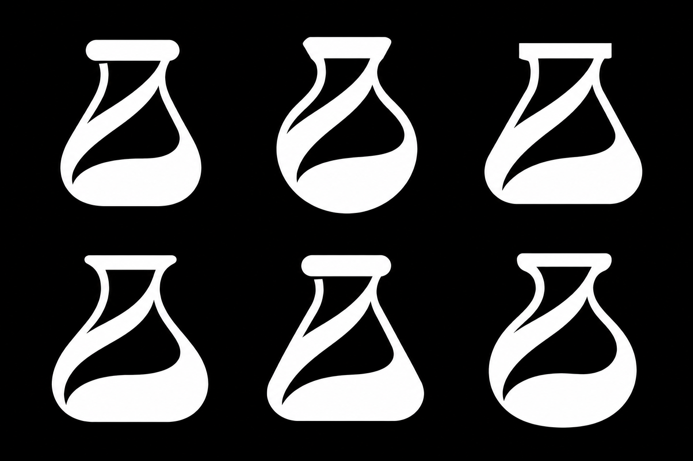
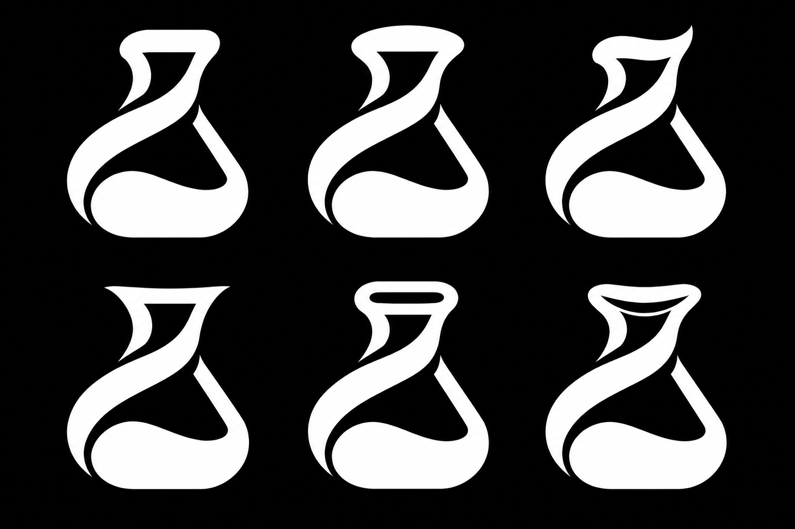
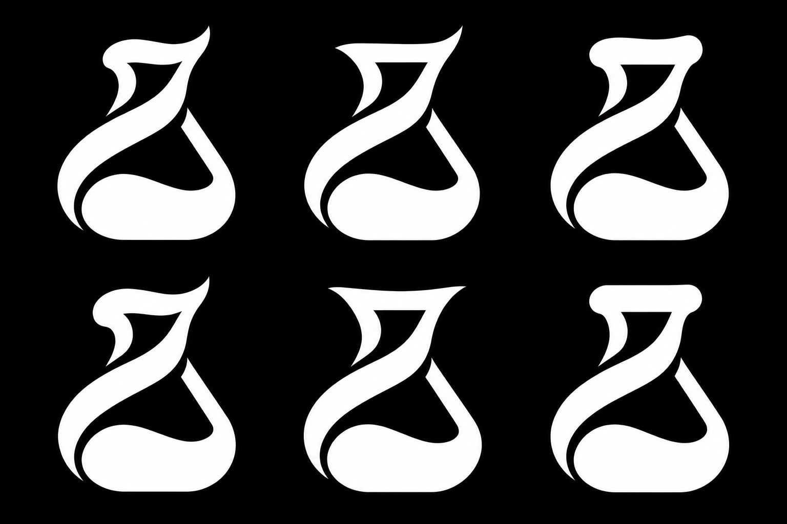

Logos Aki Labs : planches
Dis-moi le numéro (ex. « 2-E ») de celui que tu veux, ou ceux à pousser plus loin.
1. Espace négatif : une idée découpée dans le flacon

2. Monogramme : le flacon fusionné avec A et L

3. Personnalité et mouvement

4. Fusion 3-D + 1-D : le ruban dessine un 7 (variantes)

5. Fusion 3-D + 1-D, poussée : ruban plus franc, 7 plus caché (pensé pour l'animation)

6. 4-D retravaillé (pont ChatGPT) : le haut du flacon intégré au ruban, la fente gardée

7. Mélange 6-C / 6-D : la forme de 6-C, un 7 net sans bosse, le haut moins plat
